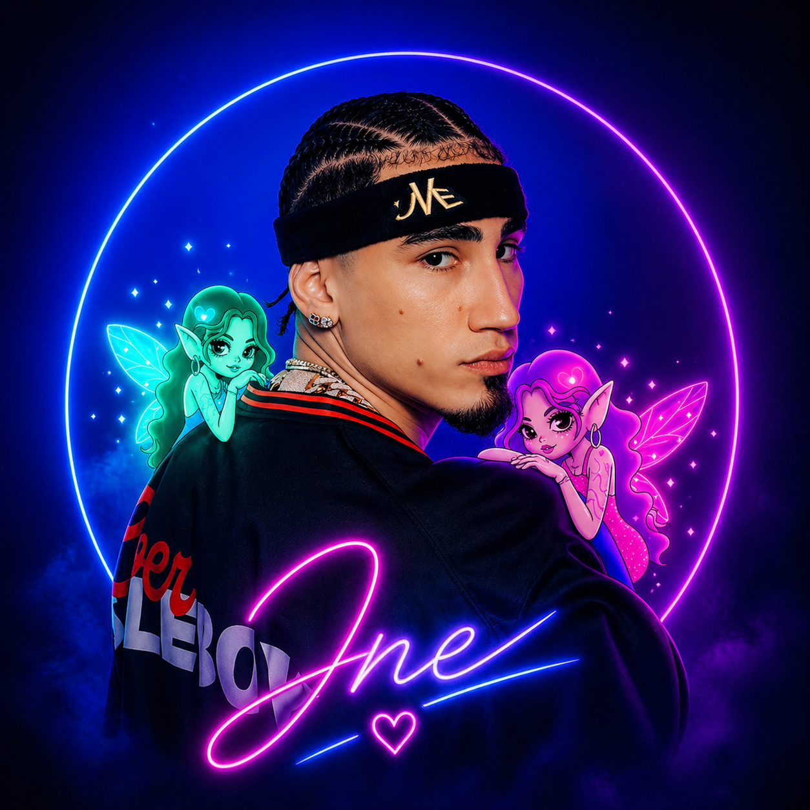

Gira: Por si mañana no estoy Omar Cortz
| Event | Date | Location |
|---|---|---|
| Omar Cortz Live | 2026-07-18 | CIudad De Valencia |
| Omar Cortz Live | 2026-08-19 | San Jose,CA |
| Omar Cortz Live | 2026-08-21 | Youtube Theater |
| Omar Cortz Live | 2026-08-22 | Fontainebleau Las Vegas |
| Omar Cortz Live | 2026-11-09 | Movistar Arena,Madrid |
Biography
Omar Cortz, nacido el 15 de marzo de 1995 en San Juan, Puerto Rico, es un cantante y compositor de música urbana que ha conquistado el mundo con su estilo único y su voz inconfundible. Desde sus humildes comienzos en la escena musical local, Omar ha logrado un éxito meteórico gracias a su talento innato y su dedicación incansable.
Su carrera despegó en 2015 con el lanzamiento de su primer sencillo, "Ritmo del Corazón", que rápidamente se convirtió en un éxito viral. A partir de ahí, Omar continuó lanzando una serie de éxitos que lo catapultaron a la fama internacional, incluyendo "Baila Conmigo", "Noche de Fiesta" y "Amor Prohibido". Su música combina elementos del reguetón, trap y pop latino, creando un sonido fresco y contagioso que ha resonado con audiencias de todas las edades.
Influences
Omar Cortz ha citado a varios artistas como sus influencias musicales, incluyendo a Daddy Yankee, Don Omar, Wisin y Yandel, y Tego Calderón. Estos artistas han sido fundamentales en la evolución del género urbano y han inspirado a Omar a desarrollar su propio estilo único dentro de la música latina.
Collaborations
- Clarent
- Daddy Yankee
- De La Rose
- ROA
- Bad Bunny
- Anuel AA
Gallery
